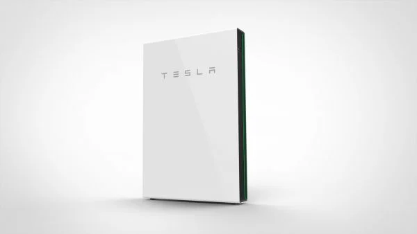

He pākahiko Pātū hiko e pupuri ana i te hiko, ka kitea nga mate ka noho aunoa hei puna hiko o to kainga ina heke te matiti. Kaore i rite ki nga kaihanga, Pātū hiko ka mau tonu o rama me te utu waea kaore he tiaki, he wahie, he haruru ranei. Whakahoahoa ki te ra me te whakamahana ki te ra kia mau tonu te rere o o taputapu mo nga ra.
Ka whakaitihia e Pātū hiko to whirinaki ki te matiti ma te penapena i to hiko o te ra mo te whakamahi ina kore te ra e whiti. Whakamahia te Pātū hiko anake, whakakotahi ranei me etahi atu hua Tesla hei penapena moni, whakaitihia to tapuwae waro me te whakarite i to kaainga mo te mate hiko.
Ma te whakaurunga ngawari me te hoahoa iti, ka whakakiia e Pātū hiko nga momo momo kaainga. Ko te hangahanga kiato, katoa-i-kotahi e whakaatu ana i nga whiringa whakapuru maha mo nga waahi o roto, o waho ranei.
13.5 kWh, 100% te hohonu o te tukunga, 90% te pai haere a tawhio noa.
7kW tihi / 5kW tonu, Tauwhiro pūrua ngawari, Putanga ngaru hiko parakore.
L x W x D
45.3" x 29.6" x 5.75"
1150 mm x 753 mm x 147 mm
251.3 lbs / 114 kg
Floor or wall mounted, Indoor or outdoor, Up to 10 Powerwalls, -4°F to 122°F / -20°C to 50°C, Water and dust resistance to IP67. Papa, pakitara ranei kua whakairihia, I roto, i waho ranei, Tae atu ki te 10 nga papa hiko, -4°F ki te 122°F / -20°C ki te 50°C, Te wai me te puehu te parenga ki te IP67.
Ka tutuki nga paerewa haumaru o Amerika me te ao, Ka tutuki nga paerewa EMI o Amerika me te ao
10 Tau
